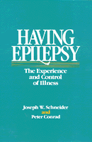

<body bgcolor="#FFFFFF" text="#000000" link="#0000FF" vlink="#CC0000" alink="#CC0000"><center><hr width="350" size="1" align="center" noshade>Interviews with 80 individuals show how those with epilepsy learn to accept it as part of their lives<hr width="350" size="1" align="center" noshade><p><a href="https://cdcshoppingcart.uchicago.edu/Cart/ChicagoBook.aspx?ISBN=9780877223184&&PRESS=temple" target="_top">Buy this book!</a> | <a href="https://cdcshoppingcart.uchicago.edu/Cart/Cart.aspx?PRESS=temple" target="_top">View Cart</a> | <a href="https://cdcshoppingcart.uchicago.edu/Cart/Cart.aspx?PRESS=temple" target="_top">Check Out</a></p><p></p></center><!--none//--><h1>Having Epilepsy</h1>
<H2>The Experience and Control of Illness</H2>
<h3>Joseph W. Schneider and Peter Conrad</h3>
<P>cloth 0-87722-318-1 $34.95, Nov 83, <FONT COLOR=#990033>Out of Print</FONT>
<br>paper 0-87722-398-X $35.95, Jul 85, <FONT COLOR=#990033>Available</FONT>
<br>Electronic Book 1-43990-099-X $35.95 <FONT COLOR=#990033>Out of Print</FONT>
<BR> 240 pp
</P><BLOCKQUOTE><I>"Well written and fascinating to read. This fine book takes a large step in...contributing to the only slowly dawning awareness of the general public, and the health workers too, of the significance of chronic illness."</I>
<br>&#151<b>Anselm Strauss</b>, University of California, San Francisco<I></I></BLOCKQUOTE>
<p>Based on in-depth interviews with eighty people who have epilepsy, this book gives a first-hand account of what it is like to cope with a chronic illness, while working, playing, and building relationships. The authors recount how people discover they have epilepsy and what it means; how families respond to someone labeled "epileptic"; how seizures affect a person's sense of self and self-control.
<p>Epilepsy patients explain what they want from their doctors and why the medication practices they develop may not coincide with "doctor's orders." The variety of experiences of epilepsy is suggested both by the interviews and by the range of terms for seizures&#151Petit Mal, Grand Mal, auras, fits, absences.
<p>The principal difficulty for many people with epilepsy is not the medical condition but the social stigma. A person with epilepsy has to cope with discrimination in obtaining a job, insurance, or a driver's license, and he or she may be cautious about revealing this "disabling" condition to an employer or even a spouse. People with epilepsy may manage information about themselves and their "lapses" and look for "safe places" like restrooms where they can be alone should a seizure begin. Many of those interviewed complained of overreactions to seizures by colleagues or bystanders: epilepsy patients were embarrassed at having provoked a public crisis or were annoyed at waking up in a hospital emergency room.
<p>This is a book for people who have epilepsy, for their families and friends; for health care professionals who deal with chronic illnesses; and for students of medical sociology and the sociology of deviance.
<BR>&nbsp;<h2>Reviews</h2>
<p><I>"For anyone who would like to 'get inside' the experience of having epilepsy, this book is probably as close as one can come."</I>
<br>&#151<b><I>Epilepsia</I></b>
<p><I>"In dispelling the notion that 'the person is the illness,' these interviews with 80 individuals reveal that those suffering from epilepsy have learned to accept it as merely another facet of their lives. A valuable contribution for those with epilepsy, for their family and friends, for medical personnel, and for the general public."</I>
<br>&#151<b><I>Booklist</I></b>
<p><I>"...carefully outlined and clearly written.... Those affected by chronic conditions may find the book most helpful.... Family and helping professionals may discover new insights.... Social scientists, especially those interested in chronic illnesses, will benefit from the research conclusions and suggestions for further research."</I>
<br>&#151<b><I>Medical Anthropology Quarterly</I></b>
<p><I>"It represents an important advance in the medical sociology literature as well as a contribution to qualitative sociology. I think that the book should become a contemporary classic in medical sociology."</I>
<br>&#151<b><I>Qualitative Sociology</I></b>
<p><I>"...an important contribution.... In focusing on what it is like to have epilepsy in this society, Schneider and Conrad have reversed an earlier concern for the medicalization of deviance, opting in this work for an understanding of the stigmatization of illness."</I>
<br>&#151<b><I>Contemporary Sociology</I></b>
<BR>&nbsp;<H2>About the Author(s)</H2>
<P><b>Joseph W. Schneider</b> is Associate Professor of Sociology at Drake University.</P>
<P><b>Peter Conrad</b> is Assistant Professor of Sociology at Brandeis University. Conrad and Schneider have also co-authored <i><a href="890_reg.html" target="_top"> Deviance and Medicalization: From Badness to Sickness</a></i> (Temple) with Eugene B. Gallagher.</P>
<BR><H2>Subject Categories</H2>
<p><A HREF="/tempress/disability.html" TARGET="_top">Disability Studies</a>
<BR><A HREF="/tempress/sociology.html" TARGET="_top">Sociology</a>
</p>
<p align="center"><a href="https://cdcshoppingcart.uchicago.edu/Cart/ChicagoBook.aspx?ISBN=9780877223184&&PRESS=temple" target="_top">Buy this book!</a> | <a href="https://cdcshoppingcart.uchicago.edu/Cart/Cart.aspx?PRESS=temple" target="_top">View Cart</a> | <a href="https://cdcshoppingcart.uchicago.edu/Cart/Cart.aspx?PRESS=temple" target="_top">Check Out</a></p><p><font face="Arial" size="1"><a href="copyright.html" onMouseOver="window.status='Web Copyright Policy';return true;" onMouseOut="window.status=''" title="Web Copyright Policy">&copy;</a> 2015 <a href="http://www.temple.edu" target="new" onMouseOver="window.status='Link to Temple University home page';return true;" onMouseOut="window.status=''" title="Link to Temple University home page">Temple University</a>. All Rights Reserved. http://www.temple.edu/tempress/titles/267_reg.html</font></p>